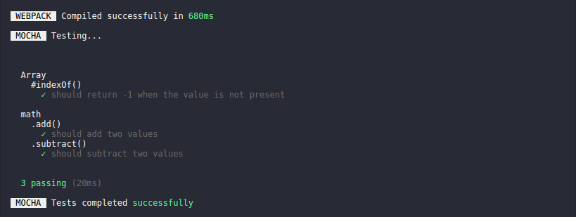

mocha-webpack 


mocha test runner with integrated webpack precompiler
mocha-webpack is basically a wrapper around the following command...
$ webpack test.js output.js && mocha output.js
... but in a much more powerful & optimized way.

mocha-webpack ...
- precompiles your test files automatically with webpack before executing tests
- handles source-maps automatically for you
- does not write any files to disk
- understands globs & all other stuff as test entries like mocha
Benefits over plain mocha
- has nearly the same CLI as mocha
- you don't rely on hacky solutions to mock all benefits from webpack, like path resolution
- mocha-webpack provides a much better watch mode than mocha
Watch mode (--watch)
Unlike mocha, mocha-webpack analyzes your dependency graph and run only those test files that were affected by this file change.
You'll get continues feedback whenever you make changes as all tests that are related in any way to this change will be tested again. Isn't that awesome?
If any build errors happens, they will be shown like below

Which version works with mocha-webpack?
mocha-webpack works with
- webpack in version
1.x.x&2.x.x - mocha in version
2.x.x&3.x.x
Installation
Note: Version 1.0.0 is on the way and the latest pre-releases are available on npm under the next tag.
Install mocha-webpack via npm install
$ npm install webpack mocha mocha-webpack@next --save-dev
and use it via npm scripts in your package.json
Further installation and configuration instructions can be found in the installation chapter.
Sample commands
run a single test
mocha-webpack simple.test.js
run all tests by glob
mocha-webpack "test/**/*.js"
Note: You may noticed the quotes around the glob pattern. That's unfortunately necessary as most terminals will resolve globs automatically.
run all tests in directory "test" matching the file pattern *.test.js (add --recursive to include subdirectories)
mocha-webpack --glob "*.test.js" test
Watch mode? just add --watch
mocha-webpack --watch test
License
MIT